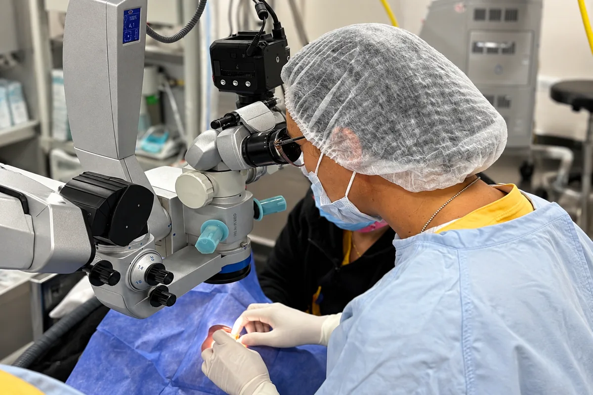

Especialidad
Párpados, vías lagrimales y órbita
Las estructuras que protegen el ojo también se enferman. La oculoplástica se ocupa de ellas.
En pocas palabras
Qué es y qué tratamos
Los párpados, el sistema que produce y drena las lágrimas y la órbita que contiene al ojo forman un conjunto delicado. Cuando fallan aparecen el párpado caído, el lagrimeo constante, las inflamaciones repetidas o las alteraciones en la posición del ojo. La subespecialidad —oculoplástica— combina la evaluación clínica con la cirugía reparadora cuando hace falta.



Preguntas frecuentes
Sobre párpados y vías lagrimales
¿Qué es la ptosis?
La caída del párpado superior. Puede estar presente desde el nacimiento o aparecer con la edad, y cuando reduce el campo visual tiene indicación de cirugía.
¿Por qué me lagrimea el ojo todo el tiempo?
Las causas más frecuentes son la obstrucción del conducto que drena la lágrima y, paradójicamente, el ojo seco, que provoca un lagrimeo reflejo. La evaluación define cuál es.
¿Cuál es la diferencia entre orzuelo y chalazión?
El orzuelo es una infección aguda y dolorosa del borde del párpado; el chalazión es una inflamación crónica, en general indolora, que forma un bulto. Ambos tienen tratamiento.
¿La blefaritis se cura?
Es una condición crónica que se controla muy bien con higiene diaria de los párpados y tratamiento en los períodos de brote. Está muy relacionada con el ojo seco.
Turnos
Consultá con los especialistas en párpados y vías lagrimales
Lunes a viernes de 7:30 a 19:30 en Bv. Chacabuco 879, Nueva Córdoba. Para urgencias, guardia las 24 horas.